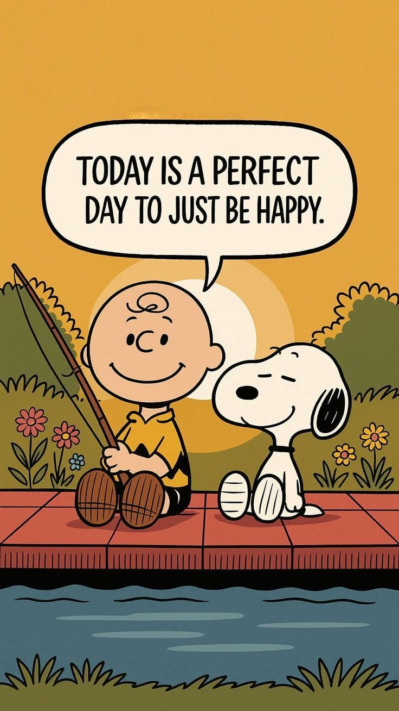

To hear the sun sound, tap anywhere before it appears. If you missed it, reload the page and tap anywhere.
7 billion damn people in the world and individual with their own
distinct list of interests! While many might vary, many may also
be similar to one another and just like that each and every person
has their own definition of an ideal... or should I say, a perfect day~
A perfect day would normally refer to a list of things a person
might want to accomplish in a day. A whole lot of people think that
a perfect day is a trip to an expensive place as in a cafe or an
amusement park or something in which they would normally pay a cost
and the perfect day would be a product they buy.
When in reality it's the total opposite! It's actually about you.
Yes, you got me right; YOU. The very person reading this!
It is ALL about you. What is your perfect day? What are those
special little things you like?
Now, that can be the day you spend time with your family or hangout with friends, go on a hike, feed someone in need, go cycling, go on a random adventure, catch up with yo' old homies, or even just take a day off at home and relax, make your favorite meal or just order in, maybe spend time with your bestie or someone close or close by.. *haha. Gosh! I could write all day about it! But you do get the concept....don't you? *bet you did even if you think "no."* :)

"MY TEAMS MATES' PURRRFECT DAY LOOKS LIKE....!
SO, I asked my team mates what their perfect day looks like and here are their responses *I GUESS YOU CAN GUESS THEIR PERSONALITY TYPES READING THE BELOW!*:
TEAM MATE 2
A perfect day for me is defined by balance, intentional movement, and constant engagement. It begins with the high energy of physical activity and playing sports, where the competition, teamwork, and active movement set an uplifting tone for everything that follows. That rush of adrenaline gets my mind clear and energized, making the rest of the day feel completely within reach. However, sports are only one part of the picture.
A truly meaningful day also requires dedicated time spent building toward long-term ambitions. I find immense satisfaction in setting aside focused hours to learn something new, refine my skills, or take concrete action on projects that actively pave the way for my future career and personal development. Knowing that I am making tangible progress toward who I want to become gives the entire day a sense of real weight and purpose.
To round out that intense combination of physical energy and strategic effort, I love slowing down in the kitchen through the art of baking. Preparing fresh ingredients, fine-tuning recipes, and watching simple raw components transform into something delicious provides a unique kind of creative focus. It serves as both a rewarding mental unwind and a hands-on craft where I can instantly enjoy the fruits of my labor. Ultimately, bringing together athletic drive, future-focused ambition, and the simple, creative joy of baking is what turns a regular day into something extraordinarily complete.
TEAM MATE 3
For me, a perfect day doesn’t start with sleeping in or doing nothing — it starts with the thrill of competition, the sound of sneakers squeaking on the court, the feel of a bat in my hands, or the rush of wind as I sprint across the field. From the very first moment I step onto the pitch or court, everything else fades away — the stress, the deadlines, the noise of everyday life. It’s just me, the game, and the raw, unfiltered joy of movement. Every pass, every shot, every goal feels like a small victory, and with each drop of sweat, I feel more alive. The camaraderie with my teammates, the cheers from the crowd, the friendly banter, and even the painful defeats — all of it makes the experience whole. By the time I’m done, I’m exhausted but electric, drained yet fulfilled. That’s when my day becomes perfect — not because I won or lost, but because I gave everything I had and felt every second of it.
TEAM MATE 4 *THAT CUDNT ATTEND
For me, there is no such thing as a perfect day. A day becomes perfect when you are living it to the fullest, fully present in the moment, enjoying it for what it is without regretting the past or worrying about the future.
I think anything peaceful is perfect. Most people think peace is something external, something we have to find, achieve, or struggle for. But I see it differently. I think peace is already within us. Sometimes all you need to do is take a deep breath and really look around you.
Look at the sky, the birds, the trees. Notice the little details you usually overlook. Just pause, observe, and take it all in. There is so much beauty and peace in the simplest things when you are truly present enough to see them.
So, I guess my perfect day is simply being fully alive in the moment, appreciating what is right in front of me, and feeling at peace with it.